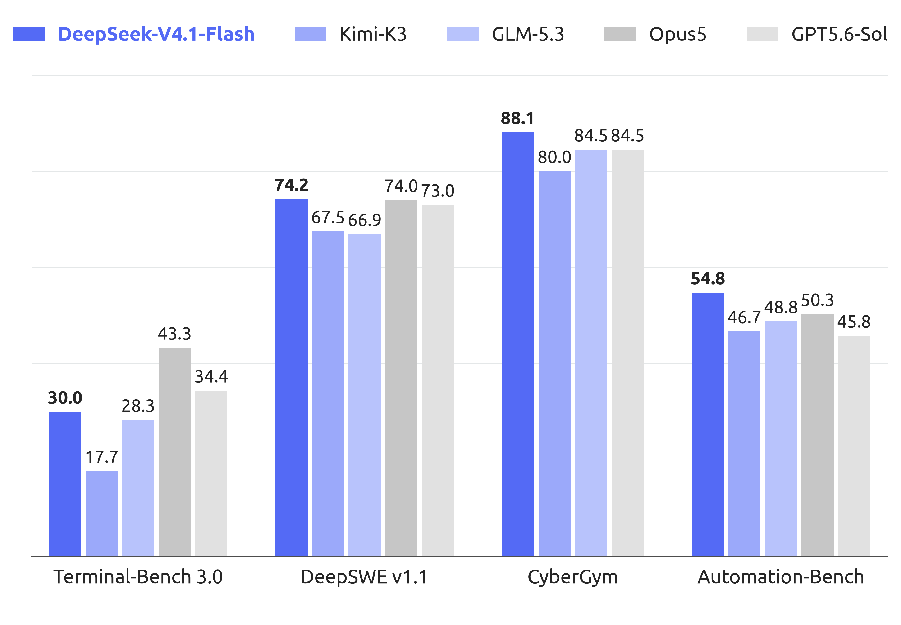
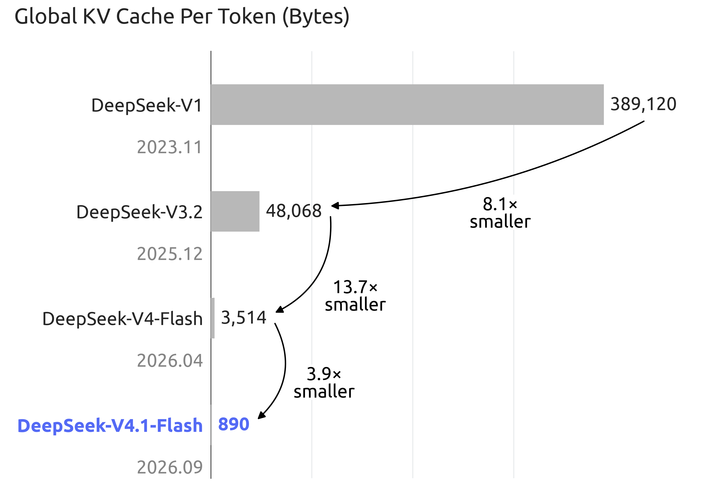

DeepSeek-V4.1-Flash — KV Cache Compression for Million-Token Agents

老板速览
| 问题 | 结论 |
|---|---|
| 为什么是新主干叶子？ | 官方独立发布权重、模型卡与 Tech Report，并更换为 deepseek_v41 架构。 |
| 最大工程变化？ | 以 CED + CSA2 + FP4 KV 把 1M context 的 KV 存储和重复索引成本压下来。 |
| 能力形状？ | Terminal-Bench 2.1、DeepSWE、CyberGym、工具增强 HLE 很强；Terminal-Bench 3/4 仍明显落后 Opus 5。 |
| 适合什么？ | 输入很长、工具轨迹很长、需要反复读取仓库或文档的 agent workload。 |
| 不能误读什么？ | “Flash”是效率定位，不代表所有 benchmark 都比 V4-Pro 更强；跨厂商数字仍受 harness 影响。 |
谱系与规格
| 字段 | 官方披露 |
|---|---|
| 发布时间 | 2026-09-10 |
| 架构 | Multimodal MoE + Causal Encoder–Decoder |
| Backbone | 552B parameters |
| 激活参数 | Prefill 8B/token；decode 16B/token |
| Transformer | 40 layers：20-layer causal encoder + 20-layer decoder |
| Experts | 1 shared + 384 routed；每 token 激活 6 routed experts |
| Conditional memory | Engram 196B parameters，按 token lookup 稀疏访问 |
| 训练数据 | 45T multimodal tokens，从头训练 |
| 上下文 | 最高 1M tokens；官方建议 max_tokens ≥ 256K |
| 推理控制 | reasoning_effort 1–100 连续可调 |
| 输入 / 输出 | 图像 + 文本输入；文本自回归输出 |
| 许可 | MIT |
V4.1-Flash 的名字容易让人只看“Flash”，但官方首次把视觉编码器从预训练开始与文本共同训练，也给出了新的 prompt encoding、权重、推理实现和可复现实验说明。它应当作为 V4 之后的新架构节点，而不是 0731 checkpoint 的日期更新。
架构：四层压缩链
1. Causal Encoder–Decoder（CED）
前 20 层作为 causal encoder，后 20 层作为 decoder。decoder 的 global KV 不再由每一层 decoder hidden states 分别产生，而是从 encoder 最终 hidden states 投影得到。直接后果是：
- prefill 只激活约 8B 参数/token；
- decode 约 16B 参数/token；
- 输入占比极高的 coding / research agent，不再为每层重复保留同规模 global KV。
2. CSA2：跨层共享稀疏索引
Compressed Sparse Attention 2 把 attention layer 固定分成 Full / Reindex / Reuse 三种模式。主 KV、indexer K 和 Top-K indices 可以跨层共享；decoder 里的 hierarchical sparse indexer 又把后续检索限制在首个 Full layer 产生的候选池中，使深层索引成本不再随完整上下文线性膨胀。
3. FP4 main KV + SWA bounded replay
主 KV 用 E2M1 FP4，每 16 channels 配一个 E4M3 scale。对 sliding-window attention，模型不把全部 SWA KV 落 SSD，而只 replay 最近 n_win tokens 重建缺失状态。两者叠加后：

| 代际 | Global KV / token | 相对 V4.1 |
|---|---|---|
| DeepSeek-V1 | 389,120 bytes | 约 437× |
| DeepSeek-V4-Flash | 3,584 bytes | 约 4× |
| DeepSeek-V4.1-Flash | 890 bytes | 1× |
4. mHC、Engram 与 DSpark
- Single-Pass mHC：重做 residual-stream mixing，并提供 Mega-mHC kernel。
- Engram：196B conditional-memory parameters，不参与每 token dense compute，而以 token lookup 稀疏访问。
- DSpark：半自回归 draft generation + confidence-scheduled verification，用于 speculative decoding。
这四层设计的共同目标不是“让一个 token 更聪明”，而是让百万 token 轨迹在真实硬件上更能被服务。
训练：模型算法稳定，环境数据扩张
预训练在 45T multimodal tokens 上从头进行；34T tokens 时开始把 context 延伸到 1M，并以 64K sequence 训练 sparse attention。视觉侧使用从头训练的 DeepSeek-ViT、2D-RoPE、3×3 pixel-unshuffle 和两层 MLP projector。
后训练仍是 SFT → RL → on-policy distillation，官方强调没有算法层面的新花样，主要改变来自数据 pipeline：大规模自动合成 agent tasks / environments，并渐进扩大数据、任务和 rollout。这个表述对 agent training 很有价值：V4.1 的 agent 增益更像环境与轨迹规模化，而不是新 RL loss。
评测：长轨迹执行强，但不是全面第一
以下均为官方 model card 在 reasoning_effort=100 下报告的 instruct 结果。
| Benchmark | V4.1-Flash | V4-Flash | V4-Pro | 观察 |
|---|---|---|---|---|
| Terminal-Bench 2.1 | 90.6 | 82.7 | 87.9 | 长终端任务显著跃迁 |
| Terminal-Bench 3.0 | 30.0 | 7.6 | 11.8 | 大增，但低于 Opus 5 的 43.3 |
| Terminal-Bench 4.0 | 31.2 | 7.0 | 12.4 | 大增，但低于 Opus 5 的 51.8 |
| DeepSWE v1.1 | 74.2 | 54.4 | 62.7 | 官方表中略高于 Opus 5 的 74.0 |
| NL2Repo-Bench | 64.0 | 54.2 | 61.5 | 仓库级理解继续上升 |
| CyberGym | 88.1 | 76.7 | 83.3 | 官方表中最高 |
| HLE with tools | 63.9 | 51.5 | 60.0 | 工具增强研究任务突出 |
| AutomationBench | 54.8 | 37.7 | 43.2 | 业务自动化显著上移 |
| Agent's Last Exam | 31.8 | 25.2 | 25.7 | 长轨迹 agent 改善 |
Harness 不是脚注
DeepSWE 和 Terminal-Bench 2.1 还比较了 Claude Code、Codex、OpenCode、Pi、mini-SWE 与 DeepSeek Harness。V4.1 在不同 scaffold 下分数明显变化，例如 DeepSWE 从 65.5–74.2，说明结果属于 model × scaffold × budget，不能只把最高值写成裸模型能力。
对部署与评测的建议
- 先测“每个严格成功任务的 KV + token + 工具成本”，而不是只测 tokens/s。
- 把 64K、256K、1M 三档上下文分开，观察 bounded replay 和 cache 压缩是否真的降低 P95 latency。
- coding agent 同时用 mini-SWE、Claude Code 与自己的 harness，避免被单一 scaffold 排名绑架。
- 连续 effort 不应只测 1 和 100；建议以 10/30/60/100 画 success–cost Pareto 曲线。
- 多模态任务要单列视觉输入 token、OCR / grounding 错误和工具调用后的最终状态。
资料边界
一手资料
- 🤗 HF Model Card
- 📄 Tech Report
- HF Model Card 本地 Markdown
- Tech Report 本地 PDF
- 本地来源索引